Once JORAM has been installed and made persistent, queues and queue
connection factories have to be created. An administration application
has been written to do this.
Building the JORAM Administration Application
In order to build the JORAM administration application, SVN and Ant
will need to be installed on your PC.
The source code for the JORAM administration application is in SVN at: http://updraft/svn/dm2repos/unisys/messaging/trunk/Implementation/Project/joram
Check the code out to a directory (referred to as JORAM_HOME).
The following Ant targets can be run from the JORAM_HOME directory:
Ant Target Name
Description
clean
Deletes the JORAM_HOME/build directory.
compile
Compiles the code into the JORAM_HOME/build/classes
directory.
makeadmin
Creates the joramadmin.zip file in the JORAM_HOME/build directory.
The joramadmin.zip
contains everything required to run the JORAM administration
application.
Unzip this file in a directory (eg c:\joram) and run the runadmin.bat script to start
the JORAM administration application.
JORAM Administration Application Basics
Starting the JORAM administration application shows the following
screen:
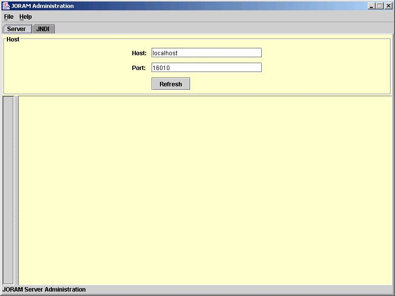
The JORAM server has two components: Server and JNDI and represented by the two
tabs above. Clicking on the JNDI
tab:
By default the application uses localhost
for both tabs. Note that the default port has also changed.
If a different server and jndi host are to be used, it is ABSOLUTELY VITAL that BOTH tabs refer to the same host as
the application uses the information from both screens when creating
queues and queue connection factories and if one still refers to localhost then problems WILL occur.
Clicking on the Refresh
button on the Server tab
results in:
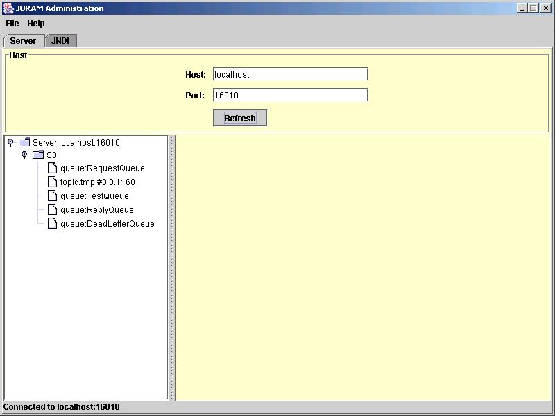
The application connects to the JORAM server using the host name and
port provided and lists the server objects in a tree.
Clicking on the Refresh
button on the JNDI tab
results in:
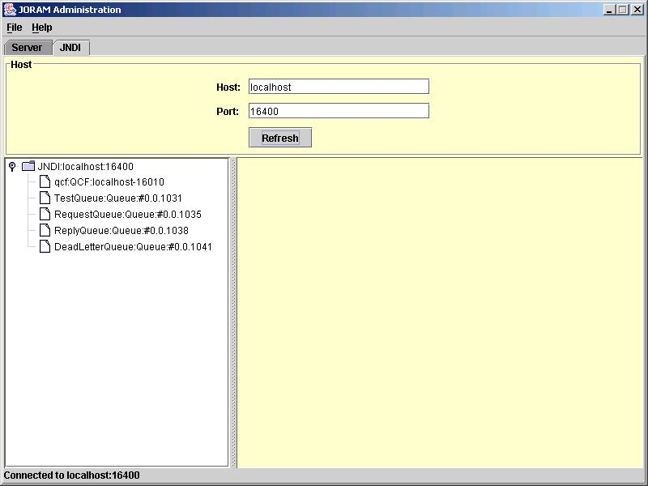
The application connects to the JORAM JNDI context using the host name
and port provided and lists the JNDI objects in a tree.
Creating a Queue Connection Factory
On the Server tab,
right-click on the S0
server and select the New Queue
Connection Factory... item on the pop-up menu:
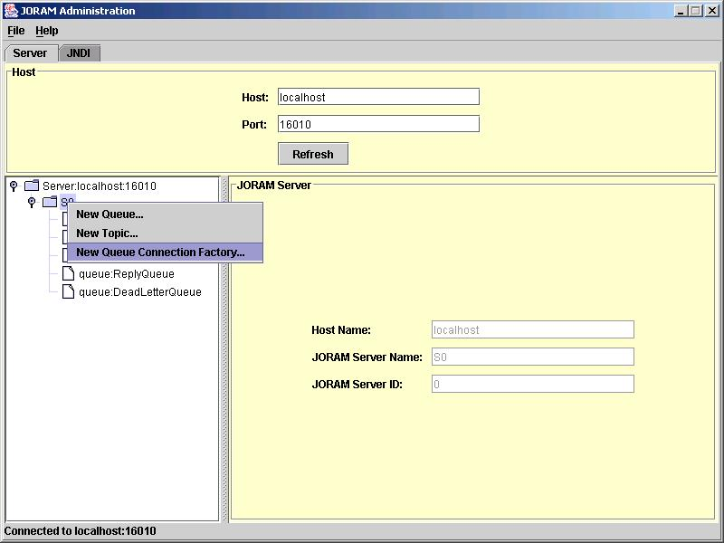
Enter the new queue connection factory details on the right panel:
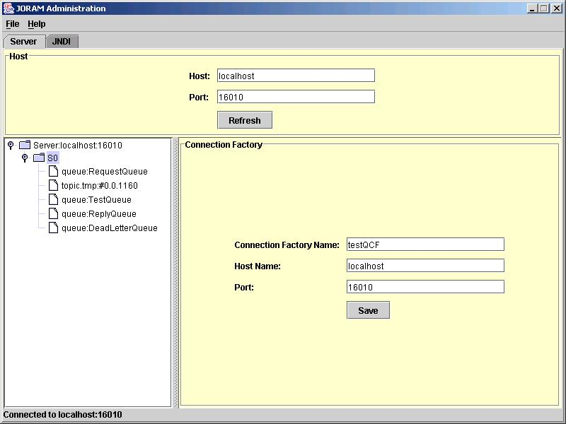
Click the Save button:
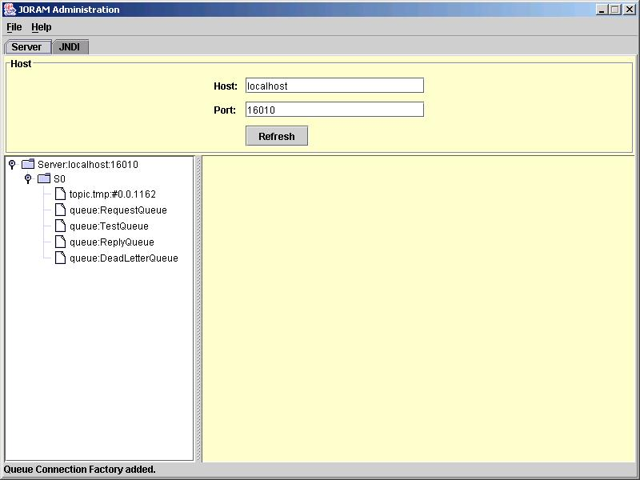
As the queue connection factory is actually a JNDI object, go to the JNDI tab and press the Refresh button to see the new
queue connection factory:
Deleting a Queue Connection Factory
On the JNDI tab,
right-click on the queue connection factory you wish to delete and
select the Delete Queue
Connection Factory... item on the pop-up menu.
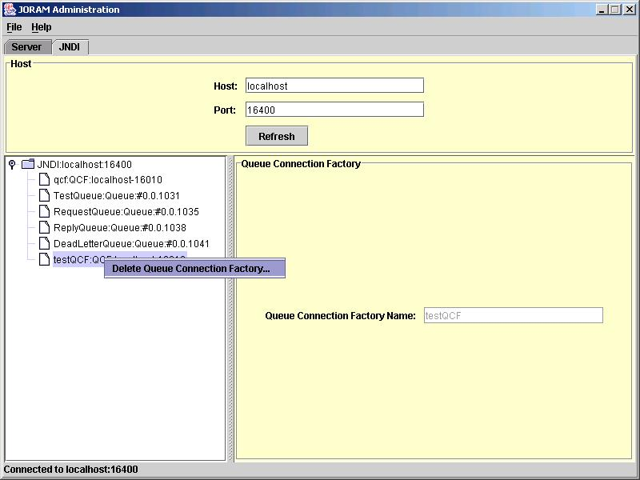
The queue connection factory is deleted:
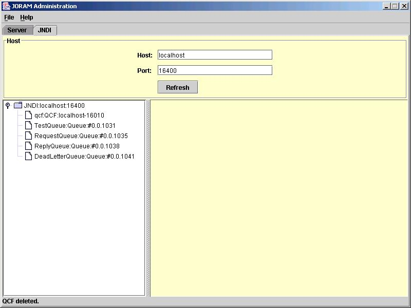
Creating a Queue
On the Server tab,
right-click on the S0
server and select the New
Queue... item on the pop-up menu:
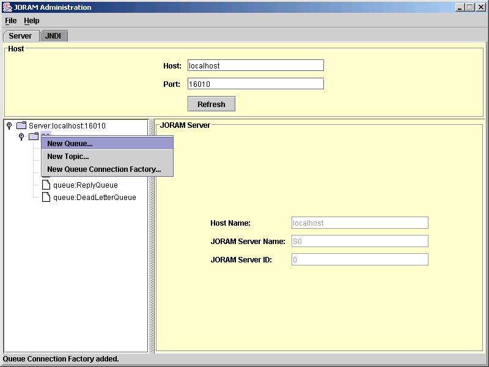
Enter the new queue name on the input dialog box:
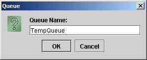
Click the OK button:
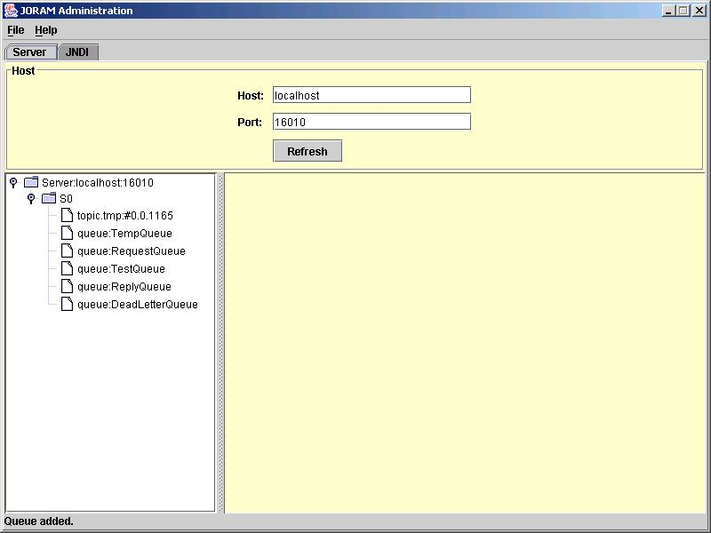
Go to the JNDI tab and
press the Refresh button
to see the new JNDI queue:
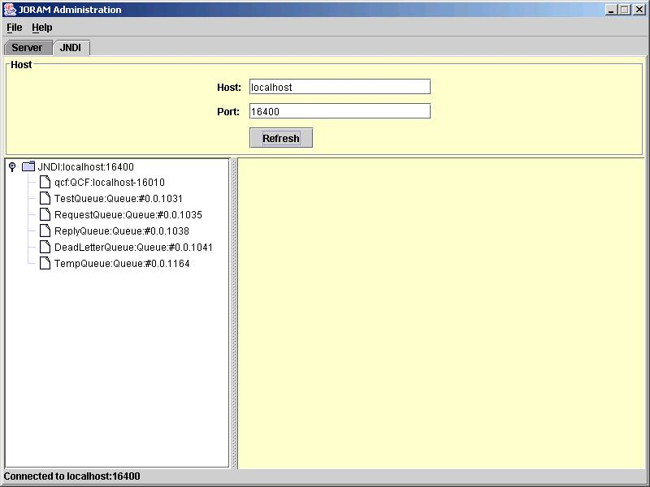
Deleting a Queue
On the Server tab,
right-click on the queue you wish to delete and select the Delete Destination... item on
the pop-up menu.
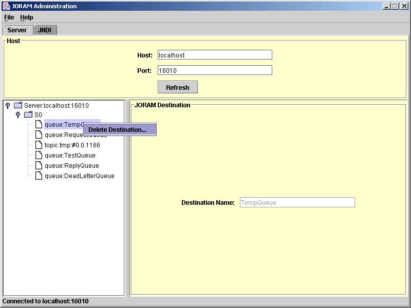
The queue is deleted:
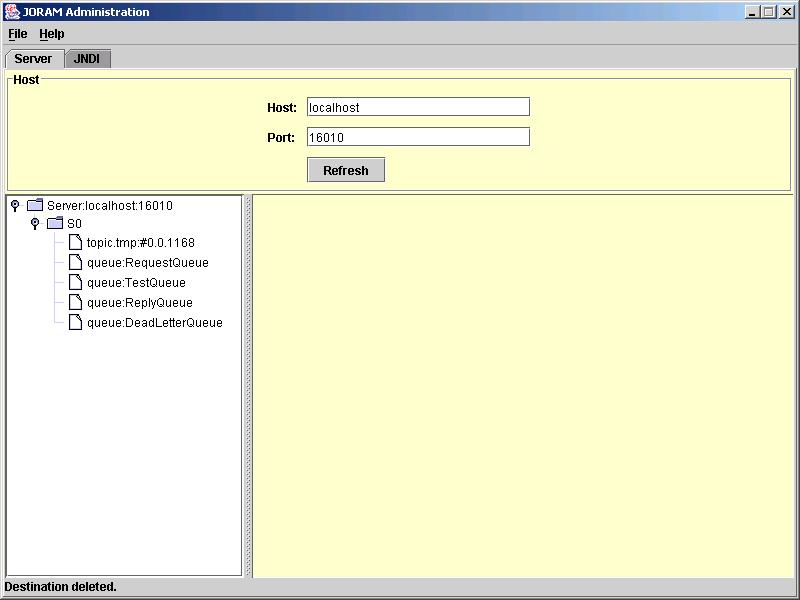
Go to the JNDI tab and
press the Refresh button
to see that the JNDI queue has been deleted: